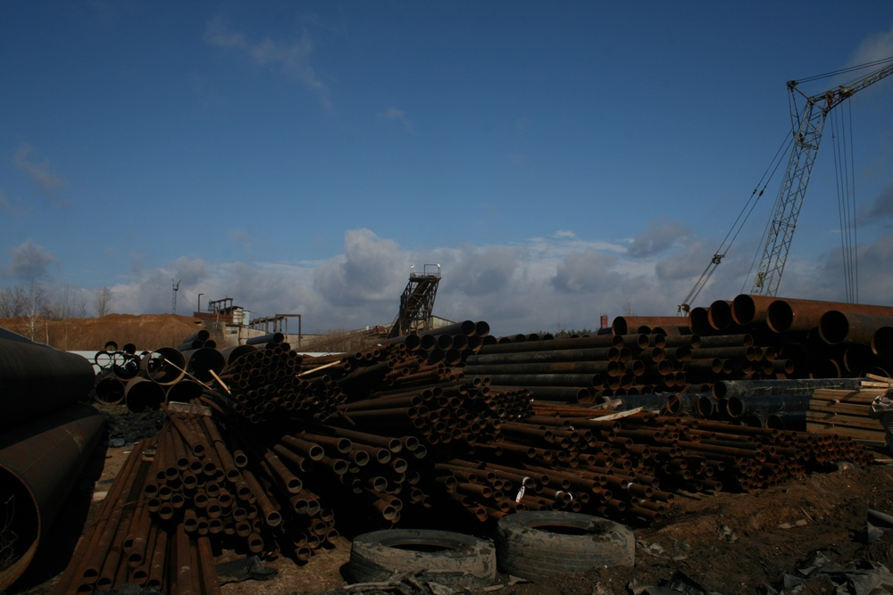
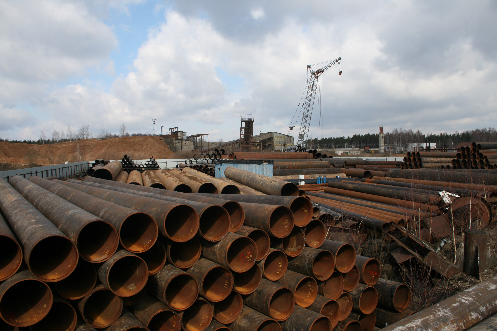

Стальные трубы б/у
Трубы стальные б/у из под газа и из под нефтепродуктов. Сталь марки S355 и выше. Обычная длина 9-12 метров.
Спирально и
прямо шовные трубы. Мы можем сделать «матрешку» и загрузить в грузовик 20-22т.
Размеры:
- 426x6-10 mm
- 508x9-10 mm
- 530x6-9 mm
- 720x7-10 mm
- 820x8-10 mm
- 1020x9-12, 14-22 mm
- 1220x9-16 mm
- 1420x15.7-24 mm

